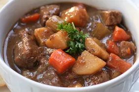

Beef Stew

Beef Stew... for two:
Rutabagas and beef chuck roast make this stew a hearty and comforting main dish any night of the week.
Ingredients
- Roast Beef
- Onion
- Garlic
- Kale
- Salt
- Pepper
- Dry chilies
- Rutabega
- Stock (your preference)
Steps
- Brown the beef with onion and garlic. Rehidrate the dried chilies in water on a low simmer for 15 minutes. Water should barely cover the chilies.
- Drain chilies and pure.
- Dice rutabegas. Add rutabegas, pork, and chilies to pot with 4 cups of stock.
- Salt and pepper to taste.
- Turn off heat, add chopped kale.